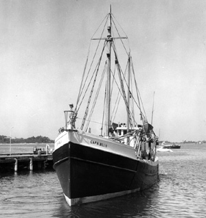

|  copyright - WHOI |
Built: Length: |
Spring 1951 at Thomaston, ME for Henry Klimm, Jr., of Falmouth,
MA 83' |
WHOI chartered Captain Bill II for an exploratory fishing program. The vessel was used as a dragger for the collection of fish samples 150 to 550 fathoms beyond the usual range of commercial fishing depths. These investigations were instrumental in developing a successful long-line fishing program in the United States.
Captian Bill II made 117 hauls during 3 cruises, each lasting a
week.